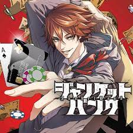
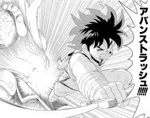
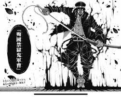
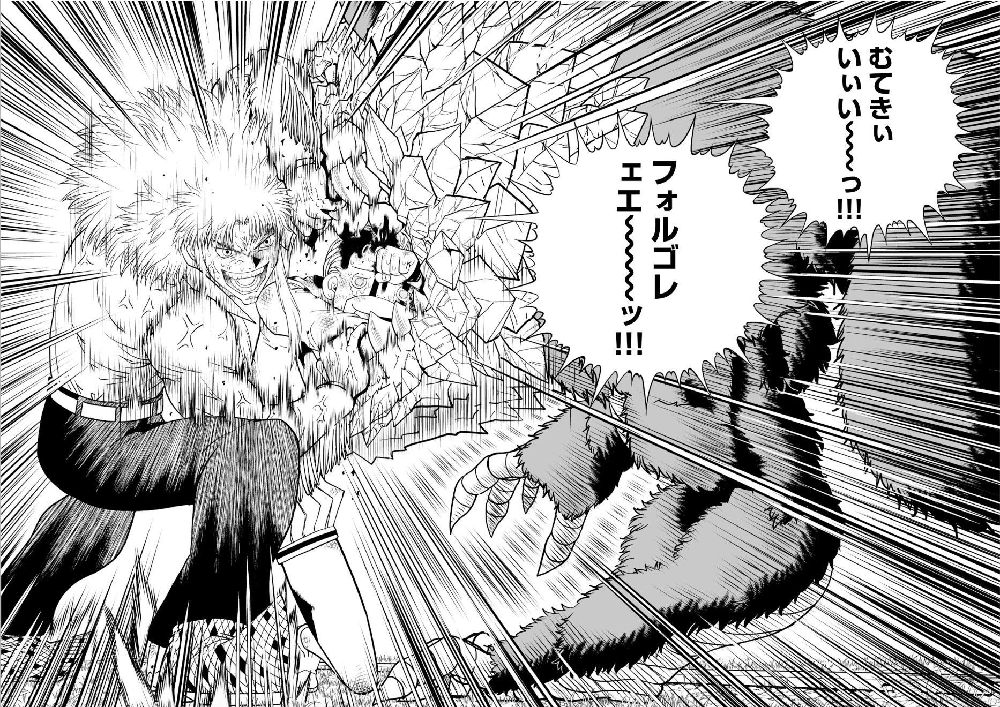

『銀行』とはその国で最も金にうるさい人間たちが集まる場所。そこで完璧に管理される圧倒的な大金を見て誰かがこう考えた。「銀行は最高の賭場になり得る」と。銀行の地下にて破格のデスギャンブル開幕!!
好きなシーン↓
好きなシーン↓
霊媒体質で過去に友人を霊障に巻き込んでしまった経験のある大学生・螢多朗。家庭教師のアルバイトをする事になった彼が受け持つ天才少女・夜宵は、螢多朗の体質を一目で見抜き、心霊スポットに一緒に行こうと誘ってきて…!?戦慄の悪霊捕縛エンターテインメント開幕!!
好きなシーン↓
金色のガッシュ！！の続編。100名の魔物の子が戦い合う魔界の王を決める戦いが終わったその後・・・魔界の王が決まり、魔界では平和な日々が訪れていた・・・ハズだった！！現在の魔界について、衝撃の事実が明かされる。その絶望の淵で、３名の魔物の子供は賭けに出る。
好きなシーン↓
